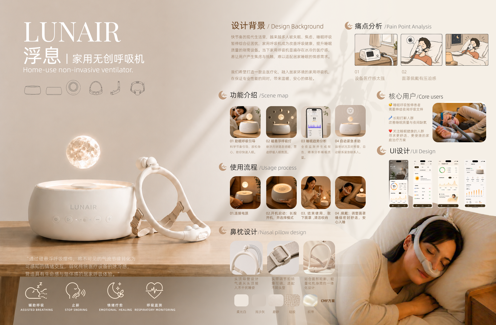
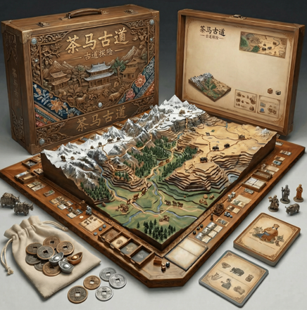
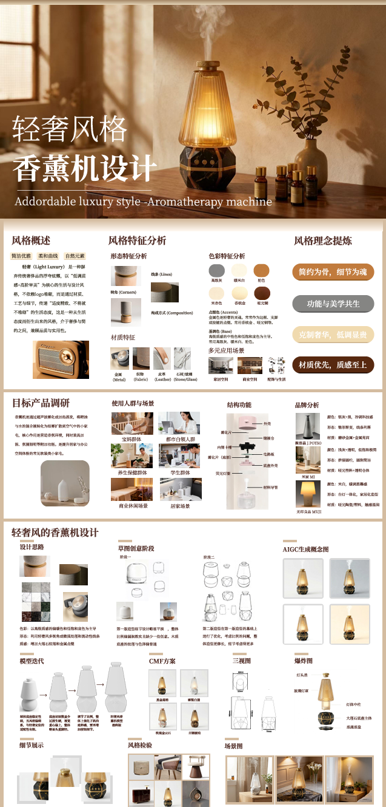
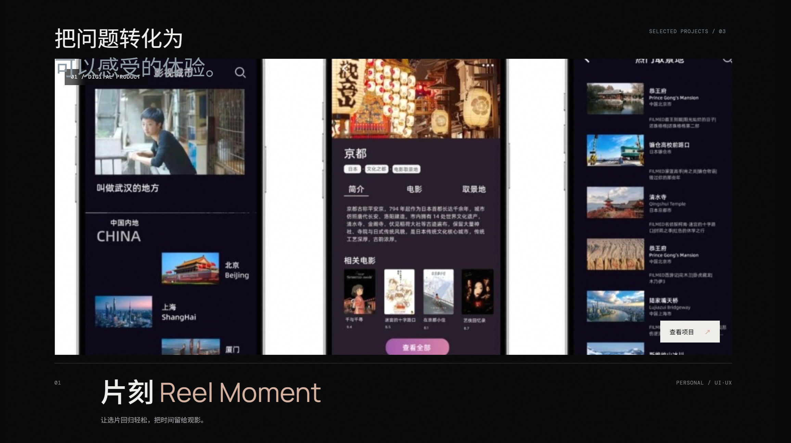
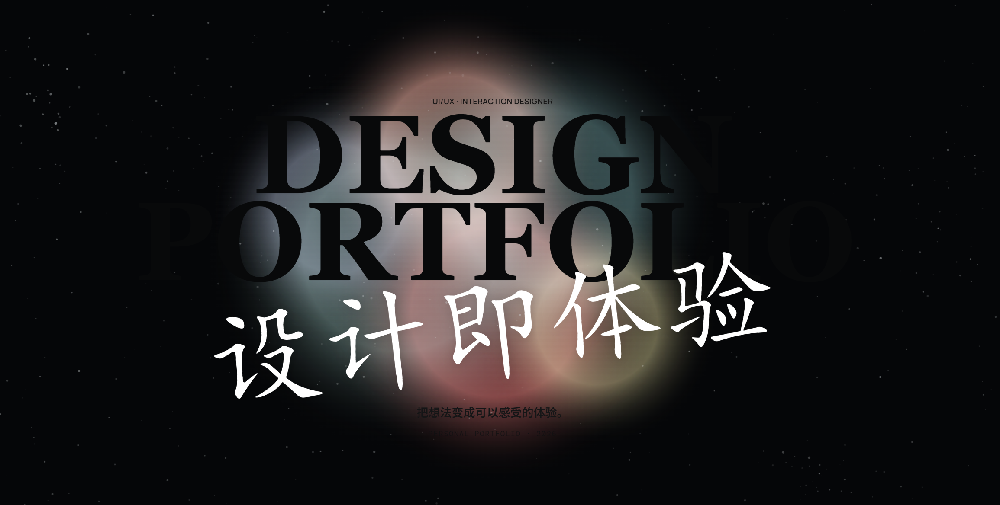
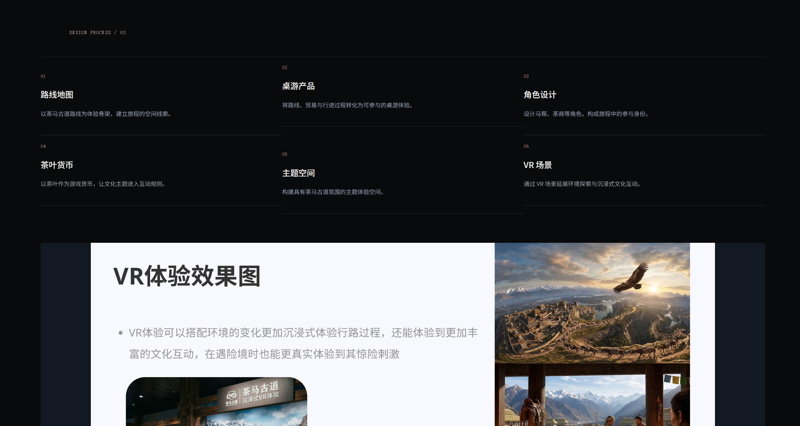

↗01
片刻 / Moment
Mobile experience2025
PRODUCT DESIGNER / 2026
把想法变成可以感受的体验。
产品设计专业大三学生，正在探索界面、叙事和人与产品之间更细腻的关系。
Product design
Interaction systems
Visual direction
China
Open to thoughtful collaborations
三个项目，三种尺度。
从日常情绪到校园系统，关注真实使用中的节奏、信息与选择。

↗
↗
↗一款关于留住当下的轻量记录体验。

当生活被通知和任务切碎，我们如何给“此刻”留出一点完整的空间？
从碎片化记录与情绪表达的真实场景开始。
将复杂的管理感收起，让记录更接近一次呼吸。
用温和的节奏、清晰的层级和可回看的轨迹完成体验。
把版式作为一种有呼吸感的视觉语言。

面向未来校园生活的服务与交互系统。

Have a project
in mind?